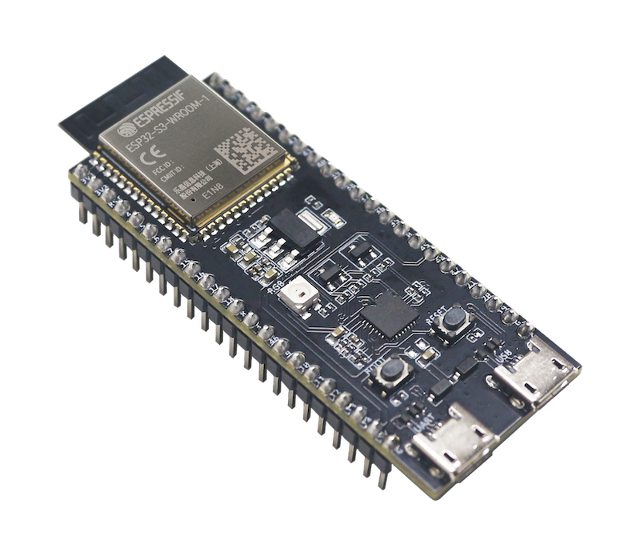

Original graph.
Checked C++.
Compiled execution.

Genuine Espressif board image.
Hardware reference, with physical testing pending.
Original graph.
Checked C++.
Compiled execution.

Genuine Espressif board image.
Hardware reference, with physical testing pending.
AI evaluation
and ML workflows.
Python / FastAPI / PostgreSQL / Redis
Private source. Evaluation infrastructure.
CAN frames.
Decoded signals.
Embedded interface.
ESP32-S3 / FreeRTOS / LVGL
Queue-based reception and display updates.
Current work / Founder & engineer
An evaluation platform for AI agents. I build the Python backend, model API clients and background workers, with isolated agent execution, tenant access controls and usage tracking.
FastAPI / PostgreSQL / Redis / React & TypeScript
Current development includes retrieval with pgvector and preparation for AWS deployment.
About / Selected experience
I'm Alex Odhiambo Haya, a backend software engineer in Nairobi. I've built Python services and APIs since 2021, with recent work focused on AI infrastructure and agent evaluation.
Jan 2026 to present
Rylgam / RL Gym
AI agent evaluation infrastructure, model API integration, sandboxed execution and multi-tenant backend systems.
2021 to present
Upwork & direct clients
Python APIs, connected-device backends, data pipelines and AWS deployments for international clients.
Aug 2025 to Feb 2026
Turing
Contributor team leadership, agent red teaming, coding evaluation tasks and reproducible failure cases.
BackendPython, FastAPI, PostgreSQL, Redis and background workers.
AI infrastructureModel APIs, retrieval, evaluation and sandboxed agent execution.
Engineering foundationElectrical and electronics engineering at Murang'a University of Technology.
Current research / Unpublished manuscript
When does a benchmark task still look like a test after its instructions are rewritten as a deployment request?
My reward hacking research examines what prevents that reframing, how to assess the resulting task pairs, and where automated measurement fails.
Read the research summary →01 / Project register
Embedded systems, control and AI evaluation. Follow each project into its source or technical notes.
Embedded ML / ESP32-S3
Model conversion, checked C++ generation and archived QEMU execution evidence.
Control systems / Python
A desktop station bringing manual and ANFIS control, motor monitoring and session logging together. The GUI starts in simulation mode.
Separate project from Neuro-Fuzzy Control.
Intelligent control / Raspberry Pi
An educational DC motor control platform for exploring conventional and neuro-fuzzy controllers. DC motor research on Zenodo →
Embedded firmware / ESP32-S3
CAN reception and signal decoding with FreeRTOS and an LVGL display interface.
AI evaluation / Private source
A Python backend for AI agent evaluation, model integration and isolated background execution.
Backend infrastructure / Python
A trading-system foundation covering domain models, configuration, TimescaleDB persistence, a hash-chained audit log and observability. Phase 1 infrastructure; trading strategies and order placement are not implemented.
02 / Articles & field notes
Technical walkthroughs that connect the implementation to its evidence.
Trace TinyML Deployer through source, generated C++, compiled firmware and archived QEMU records.
Read the TinyML study → 02 / Source walkthroughA closer look at the desktop interface, control loop, simulation boundary and session data.
Read the walkthrough →